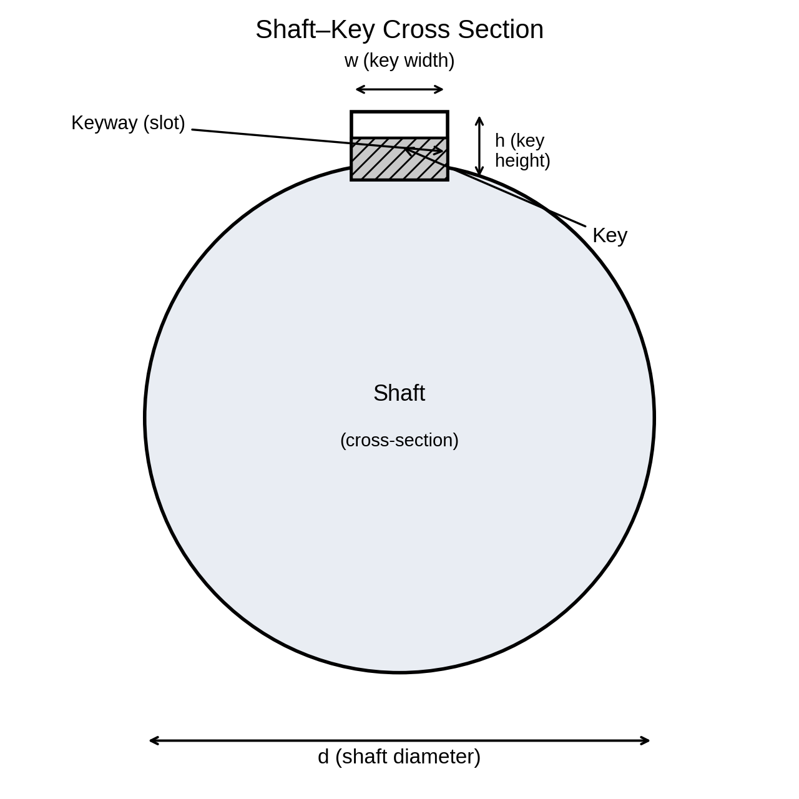

Pertemuan 7–8 · Sub-CPMK 3.1 · Desain poros + pasak + inovasi
Contoh data soal c3 (M=150 N·m, T=200 N·m, Sy=310 MPa, n=2,5): √(M²+T²)=250.000 N·mm → d³=32×2,5×250.000/(π×310)=20.537 → dmin=27,4 mm. Diameter terpasang 30 mm > 27,4 mm ✓ konsisten dengan n=3,29.
Mesin pencacah (PPT terpadu): T=9550·P/n=9550×2,2/720=29,2 N·m; Fb=512 N di overhang a=80 mm → Mmaks=Fb·a=41,0 N·m; RA=648 N, RB=137 N. Coba d=20 mm: σ=52,1 τ=18,6 σ'=61,3 n=3,43 ✓; d=25 mm: σ=26,7 τ=9,5 σ'=31,4 n=6,69 ✓ → dipilih Ø25 mm agar sesuai bantalan UCP205 + cadangan lelah.

Contoh: poros d=30 mm, T=200 N·m → F=2×200.000/30=13.333 N. Pasak 8×8×40 mm AISI 1045 (Ssy=178,9 MPa): τ=13.333/320=41,7 MPa → n=4,29; σb=13.333/160=83,3 MPa → n=3,72. Keduanya ≥2,5 → AMAN. Tumpu menentukan (n=3,72 < 4,29) karena luas tumpu (160 mm²) < luas geser (320 mm²). Jika tumpu gagal: tambah L atau h standar, bukan ubah poros.
Mengapa pasak sengaja dibuat lebih lemah dari poros (pengaman)?
Jika n tumpu < nd, apa yang diubah lebih dulu: L, h, atau d poros?
Disusun dari 8 PPT kuliah + RPS Desain Komponen Mesin (3MES40016), Prodi Pendidikan Teknik Mesin FT Unimed. Rujukan: Shigley et al. (2015), Mott (2018), Juvinall & Marshek (2020), Sularso & Suga (2004).